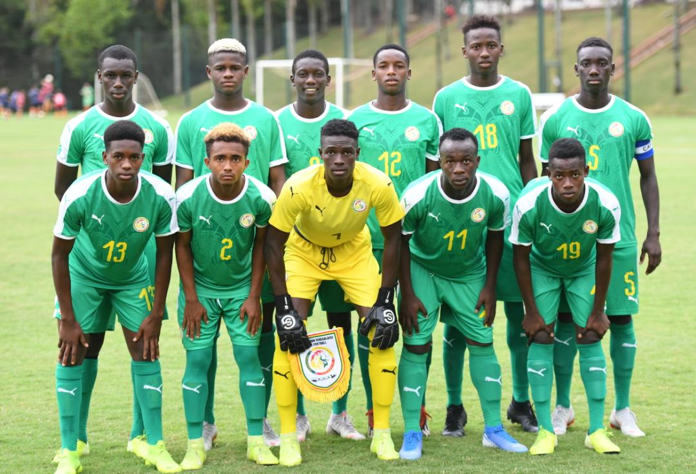
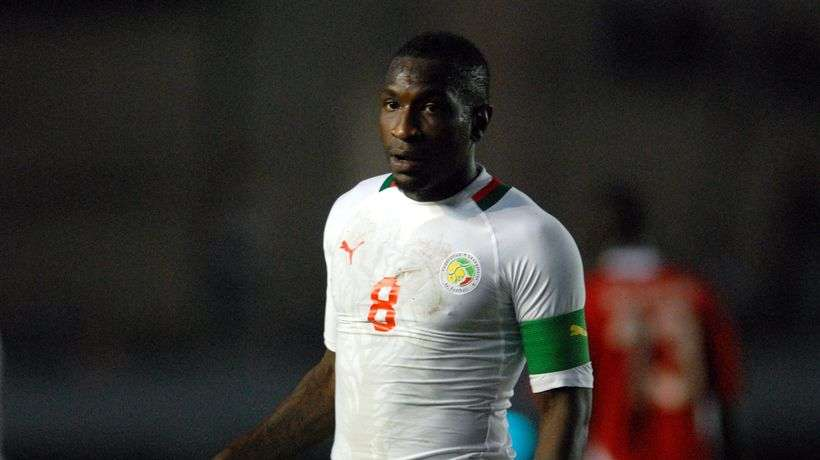
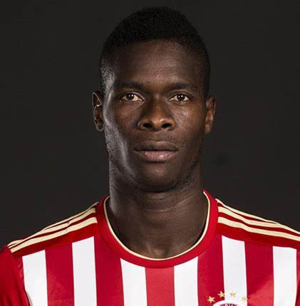
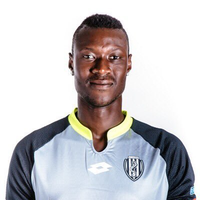
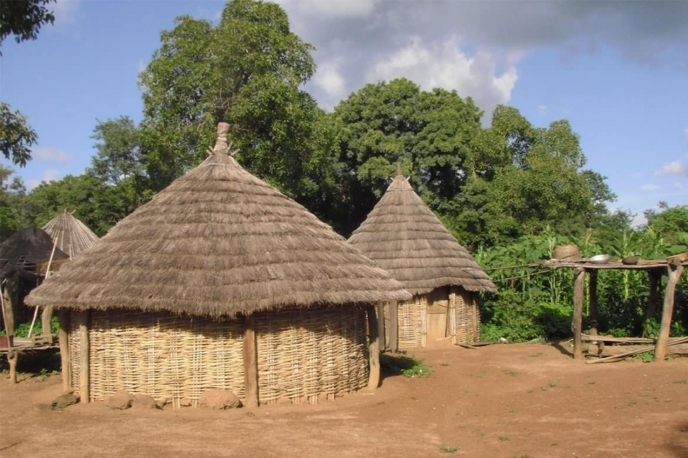
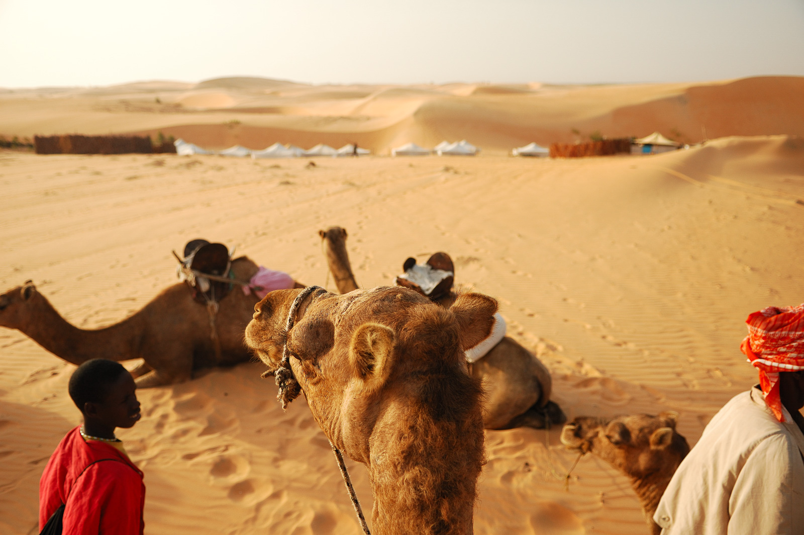
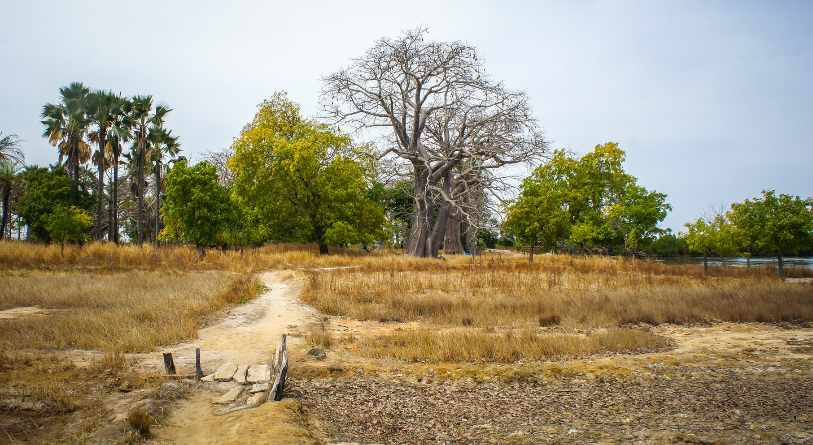
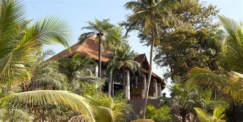

L'équipe du Sénégal de football, créée en 1961, est constituée par une sélection des meilleurs joueurs sénégalais, sous l'égide de la Fédération sénégalaise de football.Le Sénégal obtient son indépendance vis-à-vis de la France, le 10 avril 1960. La fédération sénégalaise de football (FSF) est fondée en 1960. Le premier match officiel du Sénégal a lieu le 31 décembre 1961, à l’extérieur, contre le Dahomey L'équipe du Sénégal est entraînée depuis mars 2015 par son ancien capitaine Aliou Cissé.
| Annee | Equipe 1 | Equipe 2 | Score | niveau | Pays |
| 2018 | Senegal | Angleterre | 1-2 | groupe 7 | Russie |
| 2006 | Espange | Senegal | 3-1 | groupe 8 | Allemagne |
| 2018 | Panama | Senegal | 1-2 | groupe 7 | Russie |
| 1998 | Roumanie | Senegal | 1-1 | groupe G | France |
| 2002 | Senegal | Japon | 0-2 | groupe 8 | Japon |
| 2002 | Senegal | Belgique | 1-1 | groupe 8 | Japon |
| 2006 | Senegal | Arabie saoudite | 2-2 | groupe 8 | Allemagne |
| 2018 | Belgique | Senegal | 5-2 | groupe 7 | Russie |
| 1998 | Senegal | Colombie | 0-1 | groupe G | France |
| 1998 | Senegal | Angleterre | 0-2 | groupe G | France |
| 2002 | Senegal | Russie | 0-2 | groupe 8 | Japon |
| 2006 | Senegal | Ukraine | 0-1 | groupe 8 | Allemagne |
| 1997 | Mexique | Senegal | 1-3 | groupe 2 | Argentine |
| 1997 | Pologne | Senegal | 1-0 | groupe 2 | Argentine |
| 1997 | Allemagne | Senegal | 0-0 | groupe 2 | Argentine |

Mamadou Niang, né le 13 octobre 1979 à Matam (Sénégal), est un footballeur international sénégalais. Il est désormais le directeur sportif de l'Athlético Marseille. .

Né en 1995 dans le quartier Natangué de Pikine, Pape Abou commence le football à l'AS Pikine. Avec ce club, il remporte en 2014 le championnat1 ainsi que la Coupe du Sénégal

né le 5 septembre 1993 à Ziguinchor (Sénégal), est un footballeur international sénégalais. Il évolue actuellement au poste de gardien de but au Stade rennais FC.


jzdbejeirfhfirh

jzdbejeirfhfirh

jzdbejeirfhfirh




jzdbejeirfhfirh